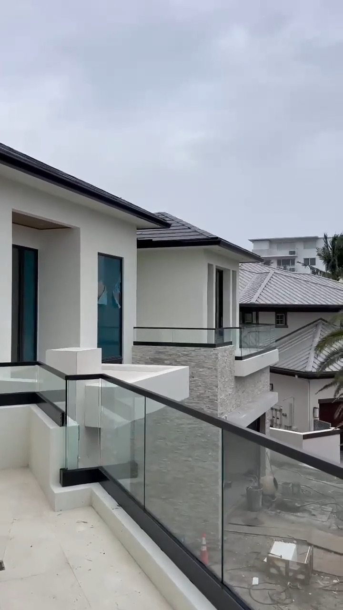

GlassStudio · Kokapet, Hyderabad
Architectural Glass Work in Kokapet
Architectural glass for high-rise towers, villas and commercial projects in Kokapet, Neopolis, Narsingi and Gandipet.
Architectural glass for Kokapet's new towers and villas
Kokapet and the Neopolis area are among the fastest-growing parts of Hyderabad, with new high-rise residential towers, gated villa communities and commercial buildings along the Outer Ring Road. Projects here are usually led by architects and builders, and the glass is a visible part of the design: railings, entrances, lobbies and large glass partitions.
GlassStudio is based nearby in Manikonda. We take glass scopes from architects and builders in Kokapet, quote from drawings, measure on site and install in phases that match the construction schedule.
- Quotes from architectural drawings and BOQ
- Phase-wise installation for towers
- Toughened and laminated glass
- Based nearby in Manikonda
Architectural glass for projects in Kokapet
- Balcony glass railings for high-rise towers
- Staircase and atrium railings for villas and clubhouses
- Glass entrances and lobby partitions
- Office glass partitions for commercial buildings
- Shower glass for apartment and villa bathrooms
- Large-format glass panels in toughened and laminated glass
For homeowners moving into Kokapet
- Shower enclosures for new apartments
- Sliding and telescopic glass doors
- Custom and LED mirrors
- Glass partitions for living, dining and pooja rooms
Localities we serve around Kokapet
Kokapet, Neopolis, Narsingi, Gandipet, Osman Nagar, Tellapur, Puppalaguda and the Financial District side of the Outer Ring Road.
Frequently asked questions
Do you take glass work for high-rise projects in Kokapet?
Yes. We quote from drawings or BOQ and install floor by floor or block by block to match the site schedule.
Do you work with architects?
Yes. We follow the architect's design and specifications and coordinate with the site team.
Book a site visit in Kokapet
Send rough sizes or site photos on WhatsApp for an estimate, or call +91 92664 72817.